地政学
トリポリは西リビアの首都で、地中海、チュニジア方面、内陸砂漠、石油国家の行政を結びます。内戦後の分裂した統治、外国の関与、民兵、国連調停が、街の安全、港の流通、学校、公共サービスに影を落とします。
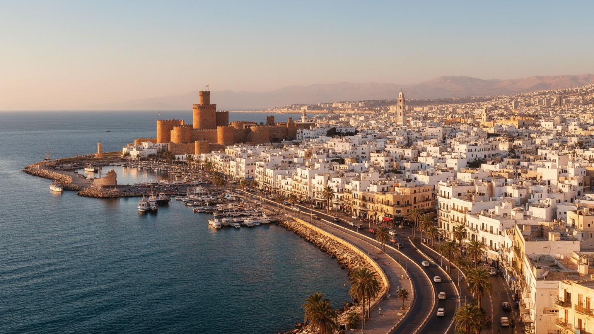
🇱🇾 リビア / トリポリタニア / World City Atlas
地中海に開くリビア最大の都市です。首都機能、港湾、金融、石油国家の事務、メディナ、オスマン期の街路、内戦後の統治、移民と避難、信仰、海岸の日常が同じ湾に重なります。
都市の骨格
トリポリは石油輸出国リビアの首都であり、同時に長い地中海交易の記憶を持つ港町です。国家の分裂、行政、金融、メディナの商い、移民の通過、海岸の散歩が近い距離で交わります。
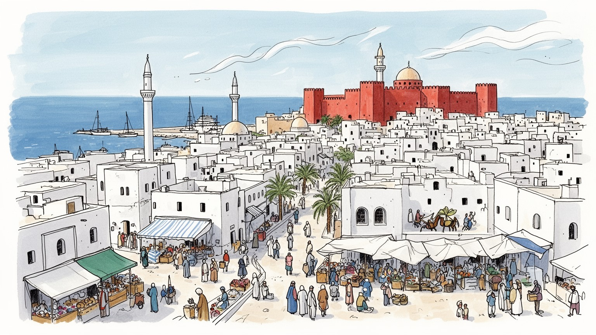
トリポリは西リビアの首都で、地中海、チュニジア方面、内陸砂漠、石油国家の行政を結びます。内戦後の分裂した統治、外国の関与、民兵、国連調停が、街の安全、港の流通、学校、公共サービスに影を落とします。
港湾、政府機関、銀行、通信、大学、商業、建設、食品加工が雇用を支えます。街の現場では公務員、運転手、店員、職人、移民労働者、路上の小商いが、物価の揺れと現金不足を受けながら日常と買物を動かします。
メディナの路地、オスマン期のモスク、スーフィーの記憶、ラマダンの夜、魚料理とミント茶が重なります。イスラムの暦は市場、家族、寄付、祈りの時間を整え、海辺の街に共同体の節目と夜の明かりや音を与えます。
旅行者は赤い城、旧市街、海岸通り、近郊のサブラタやレプティス・マグナへ目を向けます。住民は停電、物価、治安、交通、住宅、医療、学校、夏の暑さや夜道、子どもの通学を気にしながら湾岸の生活を続けています。
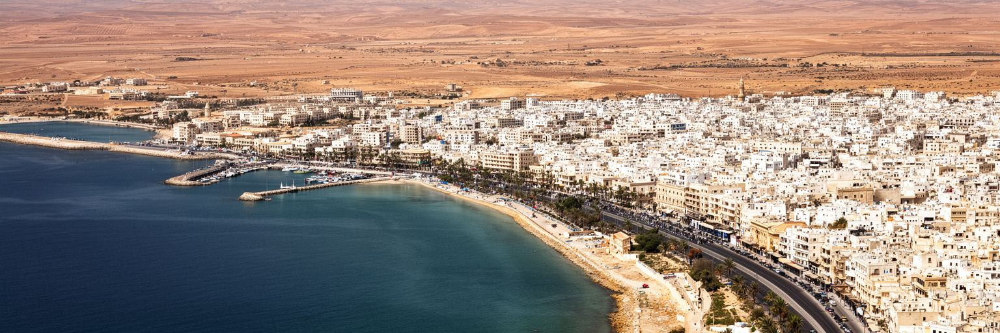
トリポリは、北アフリカの地中海岸に突き出した低い平地と湾を基礎にして発達しました。海は古くから交易、漁業、軍事、移動の道であり、背後の内陸は砂漠とオアシス、さらにチュニジア方面の陸路へつながります。港と旧市街、赤い城、海岸通り、近代的な行政地区は、地形としては小さな沿岸帯にまとまるが、そこへ国の政治と経済の多くが集中します。湾は外へ開く窓であると同時に、移民船、密輸、沿岸警備、国際支援、軍事的緊張の入口にもなります。海辺の散歩道では家族連れが風を受け、近くでは港湾労働、税関、燃料、輸入品の流通が動きます。トリポリを読むには、地中海の明るい景色だけでなく、国境を越える人と物、内陸から集まる行政需要、海から来る政治圧力を同時に見る必要があります。水辺は観光の余白ではなく、首都の脆さと外向きの力が交差する場所です。海に開くことは、豊かな接続を意味する一方、国家が不安定な時には介入、監視、避難、物資不足の問題を増幅します。湾の地形は、街の美しさだけでなく、リビアが世界と結ばれる形を決めています。さらに、低い沿岸部に住宅と行政が密集するため、道路の一本、港の一角、海岸の護岸が都市全体の動線を左右します。内陸へ向かう道が塞がれば、市場、病院、学校の普通の用事もすぐ滞ります。地形は日常の時間割にも入り込みます。海岸を歩く経験は、首都を読む入口になります。
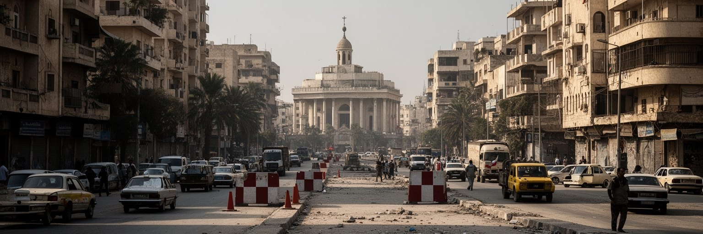
トリポリはリビアの首都ですが、単純な中央政府都市ではありません。二〇一一年以降、政治機関、武装勢力、地方勢力、国際的な仲介、外国の利害が重なり、首都機能はしばしば分裂と妥協の上に置かれてきました。政府庁舎、中央銀行、国営企業、外交団、空港、港、通信施設は、国家を動かすために必要な場所であると同時に、影響力をめぐる争点にもなります。住民にとって政治の不安定さは抽象的なニュースではなく、検問、道路封鎖、停電、給与支払い、医薬品、学校、銀行窓口、燃料の行列として現れます。首都に住むことは、国家の機能不全を日常の速度で感じることでもあります。一方で、行政職員、医師、教師、技術者、商人、家族は、完全な安定を待たずに生活を組み直しています。トリポリの政治性は広場や庁舎だけにあるのではありません。誰が安全に通勤できるか、どの地区にサービスが届くか、どの銀行で現金を引き出せるかに宿ります。首都は国家の顔であると同時に、国家の裂け目をもっとも近くで引き受ける都市です。統治の回復は制度の文章だけでなく、住民が明日も学校、病院、市場へ行けるという感覚を取り戻すことから測られます。外交機関や国際機関の存在も、街に外部の視線を集めます。ですが支援の計画が住民の生活へ届くには、道路、役所、銀行、自治体、地域の信頼が必要です。首都の安定は、政治合意と生活実務の両方で試されます。
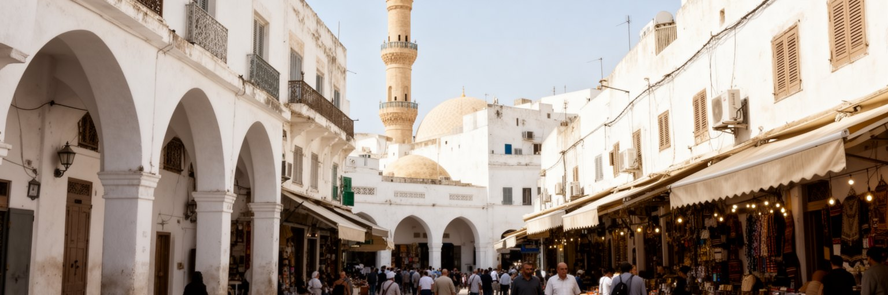
トリポリのメディナは、フェニキア、ローマ、イスラム、オスマン、カラマンリー朝、イタリア統治をくぐり抜けた都市記憶の層です。白い壁、細い路地、中庭住宅、スーク、モスク、ハンマーム、隊商宿の痕跡は、海上交易と内陸の商いが結びついた時代を語ります。オスマン期に整えられたモスクや門、商業空間は、現在の旧市街の骨格をなお形づくりますが、保存は簡単ではありません。老朽化した建物、所有権の複雑さ、修復資金の不足、治安、観光客の少なさ、若い世代の転出が、歴史地区を弱くします。一方で、メディナは博物館ではなく、礼拝、買物、修理、食品、衣料、金属細工、家族の記憶が残る生活の場所です。観光の写真に向く路地であっても、そこには排水、電気、住まい、廃棄物、店舗の賃料という日常の問題があります。トリポリを旧市街から読むには、古い石やアーチの美しさだけでなく、その空間を使い続ける人の負担を見る必要があります。メディナが生きているかどうかは、壁が残ることだけでは決まりません。職人が店を開け、子どもが道を覚え、礼拝の時間に人が戻り、修復が住民を追い出さない形で進む時、旧市街は記憶と生活を同時に保つことができます。観光客が少ない時期でも、旧市街の商いは完全には止まりません。香辛料、布、金属、菓子、修理の小さな店は、家族の行事や近所の信用を支えます。油で揚がる菓子の匂い、店先の呼び声、日差しを避ける路地の影も、古い街路が自分の手触りを失わないための基盤です。
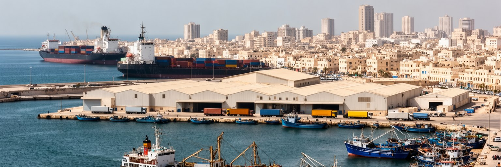
トリポリの港は、リビアの首都生活を支える重要な物流拠点です。石油そのものの輸出基地というより、食品、消費財、建材、機械、医薬品、車両、日用品が入る入口としての役割が大きいです。港湾、倉庫、税関、通関、運送、修理、漁業、商店、銀行は、海岸の都市経済をつなぎます。国家収入の多くは石油に依存しますが、住民が毎日手にするパン、小麦粉、薬、燃料、衣類は、輸入の安定と為替、港の処理能力、道路の安全に左右されます。政治不安や通貨の混乱があると、価格、在庫、現金、物流費はすぐ生活へ響きます。港は単なる産業施設ではなく、首都の物価と安心を決める場所です。周辺には古い商業地、銀行、役所、海岸道路が集まり、搬入車両と歩行者、漁師と公務員、旅行者と商人が交差します。朝の魚、輸入菓子、携帯部品、学校用品まで、港を通る品は市場と家庭の会話を変えます。トリポリを経済から読むには、油田の数字だけでなく、港で荷が降ろされ、市場へ運ばれ、家庭の台所へ届くまでの流れを見る必要があります。港の機能が乱れると、都市の食卓、医療、建設、学校までもが揺れます。反対に、港が透明で効率的に動けば、商人は計画を立て、消費者は価格を読み、行政は信頼を少しずつ取り戻せます。港湾経済は、リビアの国際接続を日常生活へ翻訳する装置です。小さな店主にとっても、港は遠い施設ではありません。通関の遅れ、為替の変動、道路の安全は仕入れ値に直結し、棚に並ぶ商品の量を変えます。港の安定は、家計の安定でもあります。
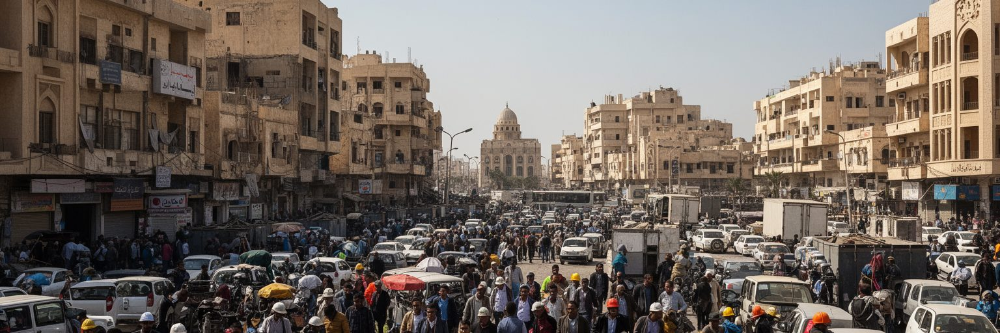
リビア経済の柱は石油とガスであり、トリポリはその収入を制度、銀行、給与、輸入、補助金へ変える首都の事務機能を担います。油田や輸出港は国内各地に広がりますが、国営企業、金融機関、政府部門、通信、法務、教育、医療の多くはトリポリに集まります。石油収入は公務員給与、燃料価格、公共事業、輸入代金を支える一方、政治対立が深まると分配をめぐる争いの中心にもなります。都市の労働は石油産業の現場だけではありません。銀行員、会計担当、大学教員、病院職員、建設作業員、タクシー運転手、携帯電話店、カフェ、警備員、清掃員、移民労働者が、石油国家の収入に依存しながら各現場を回しています。若者は大学で会計や工学、語学を学び、SNSで求人を探し、家族の期待と不安定な制度の間で進路を選びます。トリポリでは、資源の豊かさと公共サービスの弱さが同時に存在し得ます。停電や現金不足、輸入品価格の上昇は、石油収入がある国でも制度が安定しなければ生活が脆いことを示します。都市を読むには、地下資源の量だけでなく、その収入がどの役所、銀行、地区、家庭へ届き、どこで止まるのかを見る必要があります。石油は国を富ませる可能性を持ちますが、雇用の多様化、技能、透明性、地方との公平な分配が伴わなければ、首都の経済は期待と不満を集めます。起業、修理、通信、教育、医療の仕事が伸びても、制度と治安が不安定なら投資は続きにくいです。石油後の都市経済をどう厚くするかは、首都の未来そのものに関わります。
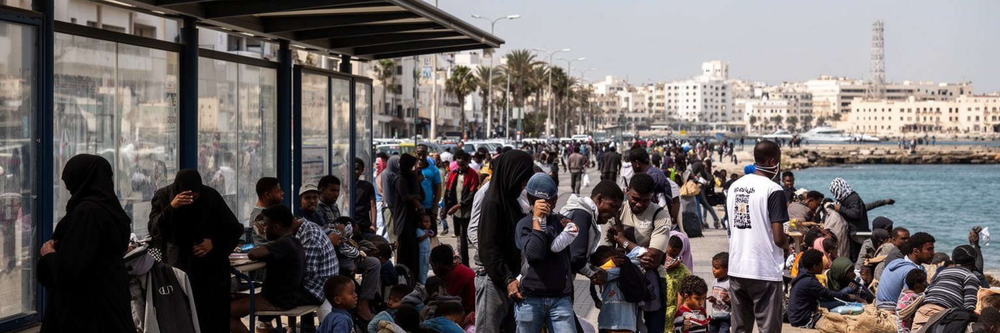
トリポリは、北アフリカとサハラ以南アフリカ、地中海、欧州を結ぶ移動の結節点でもあります。国内の紛争や経済不安で首都へ移る人、内陸や周辺国から働きに来る人、欧州を目指して海へ向かう移民や難民、拘束や搾取を経験する人が、都市の周縁や労働市場に姿を見せます。移民は建設、清掃、農作業、店舗、運送、家事、修理などで働くことがありますが、法的な地位が弱いほど賃金未払い、暴力、拘束、医療へのアクセス不足にさらされやすいです。国内避難民も、家族のつながり、空き家、学校、支援団体を頼りに生活を再建します。トリポリの移動を語る時、地中海を渡る船だけに焦点を当てると、都市の中で続く労働と生活の現実を見落とします。移民は危機の象徴である前に、都市で働き、食べ、祈り、病気になり、送金し、家族と連絡を取る人々です。国家統治が不安定な都市では、弱い立場の人ほど保護から遠ざかります。トリポリを人の移動から読むことは、リビアの地政学、欧州の国境政策、サハラを越える経済、都市の労働需要を同じ線で結ぶことです。移民と避難民の安全が守られるかは、首都の制度が人間の尊厳をどこまで扱えるかを示す指標になります。地域の商店や工事現場では、出身地の違う人が同じ賃金交渉や住まい探しに向き合います。支援が届く場所と届かない場所の差は、都市の影に隠れやすいです。移動する人の経験を読むことで、首都の労働市場と保護制度の弱点が見えてきます。
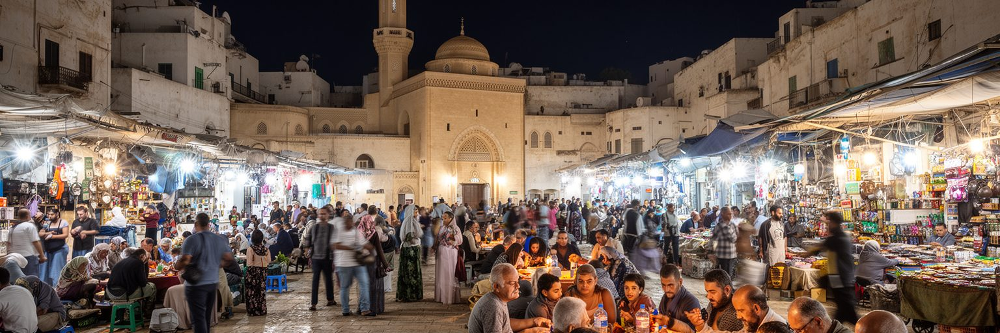
トリポリの日常は、イスラムの礼拝時間、家族、食卓、市場、近所のつながりによって形づくられます。メディナや新市街にはモスクが点在し、金曜礼拝、ラマダン、イード、葬儀、慈善、学びの場が、都市の暦と生活のリズムを作ります。オスマン期のモスクや中庭は歴史的建築としても重要ですが、信仰は観光用の景観ではありません。店を閉める時間、夕方の買物、親族訪問、子どもの教育、寄付、近所で困った人を助ける習慣として、街の使い方に深く入り込みます。政治的な不安や経済的な不足がある時、宗教施設や地域のつながりは精神的な支えだけでなく、食料、相談、情報、信頼の回路にもなります。一方で、宗教をめぐる権威や社会規範は、若者、女性、少数者、表現の自由をめぐる議論とも関わります。トリポリを文化から読むには、モスクの外観やラマダンの夜の賑わいだけでなく、家庭の台所、学校、職場、服装、音楽、結婚、弔いの場を見る必要があります。地中海の港町としての開放性と、保守的な家族規範は同じ都市に共存します。祈りは日常を安定させる力であり、同時に社会が自分の変化を議論する場所でもあります。市場の匂い、海風、礼拝の呼びかけ、家族の食卓、車から流れるラジオやSNSの噂が重なる時、トリポリの都市文化は制度の混乱を越えて続く生活の厚みを見せます。魚、クスクス、スープ、香辛料、甘い菓子、ミント茶は、家庭の記憶と地中海の交易をつなぎます。断食明けの食卓や親族訪問は、都市の不安を一晩だけでも和らげる共同の時間になります。
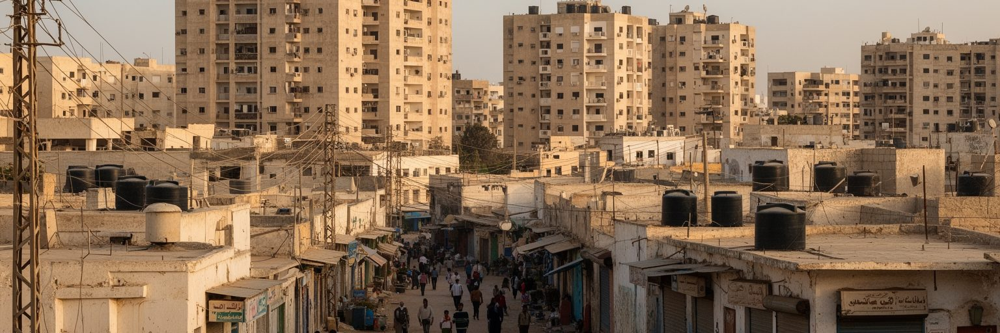
トリポリの暮らしを考える時、住宅と公共サービスは外せません。市街は旧市街、海岸沿いの地区、低層住宅地、集合住宅、郊外へ広がり、人口増加と国内移動、建設の停滞、所有権の複雑さが住まいの条件を変えてきました。家族の近さは支えになりますが、若い世帯が独立した住宅を得にくい場合もあります。停電、給水、道路補修、ごみ収集、学校、医療、インターネット、燃料は、政治の安定と行政能力に大きく左右されます。紛争が激しい時期には、建物の損傷、避難、家賃上昇、サービス停止が生活を直撃しました。住民は発電機、水タンク、親族ネットワーク、民間サービス、近所の助け合いで不足を補いますが、それは家計と時間の負担でもあります。トリポリの住宅をめぐる論点は、高層化や郊外化だけの話ではありません。治安、雇用、学校の近さ、女性や子どもの移動、安全な夜道、医療への到達、移民や避難民の住まいを含む都市福祉の焦点です。公共サービスが信頼できるほど、住民は未来の計画を立てやすくなります。逆に、毎日の電気や水が不安定なら、首都であっても生活は小さな危機の連続になります。トリポリを日常から読むとは、歴史的建築や政治ニュースの背後で、家の中の冷蔵庫、病院までの道、学校の授業、夜の照明がどれほど都市の安心を左右しているかを見ることです。住宅の修繕や増築も、資材価格、許認可、職人の確保、治安に左右されます。家は個人の財産であると同時に、親族を受け入れ、避難者を泊め、失業時の支えになる社会的な器でもあります。
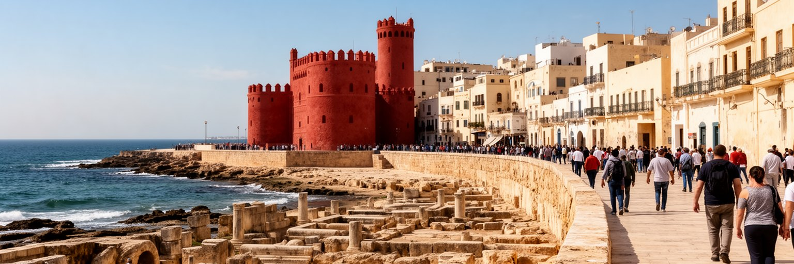
トリポリは、メディナ、赤い城、海岸通り、広場、モスク、旧い市場に加え、近郊のサブラタやレプティス・マグナへ向かう入口でもあります。古代ローマの遺跡、フェニキア以来の港、オスマン期の街路、イタリア統治期の建築は、地中海世界の長い交流を示します。観光の潜在力は大きいが、治安、航空便、文化財管理、博物館運営、案内人、宿泊、保険、国際的な信頼が整わなければ、本格的な回復は難しいです。遺産は外貨を得る資源であると同時に、住民が自分の街の価値を再確認する手がかりでもあります。観光が戻る時、重要なのは名所を消費するだけの形にしないことです。旧市街の住民、職人、商店、清掃、交通、文化財修復へ利益が届かなければ、遺産は生活から切り離されます。トリポリの観光を読むには、閉じた博物館や修復中の建物、客の少ない市場、海岸で過ごす家族も含めて見る必要があります。都市の魅力は、完全な安定を待つ間にも消えるわけではありません。むしろ、困難な時代をくぐり抜けて残る路地、城壁、食文化、海風こそ、将来の旅の意味を深くします。遺産を守ることは、観光客のためだけではなく、住民が不安定な政治の中でも都市の長い時間を失わないための仕事です。赤い城のような象徴的な施設は、都市の誇りを集める一方、どの時代の記憶をどう語るかという難しさも抱えます。観光の再開は、歴史を単純化せず、複数の記憶を扱う力を求めます。
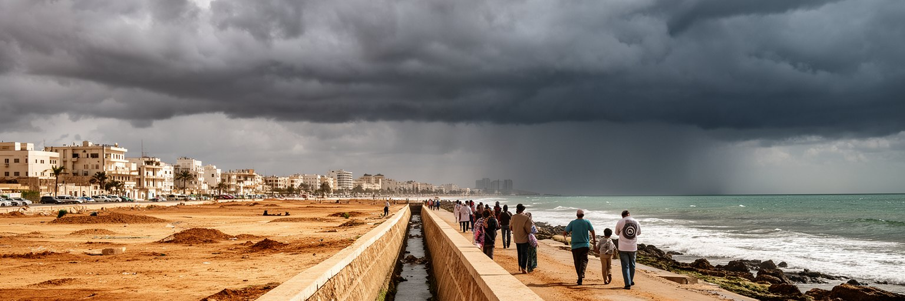
トリポリの気候は、乾いた長い夏と比較的穏やかで雨のある冬を持つ半乾燥の地中海性です。夏は暑く、湿気と海風が混じり、日陰、冷房、電力、給水が生活の質を左右します。冬の雨は限られていますが、排水が弱い地区では道路冠水や建物被害を起こし得ます。海岸都市であるため、海面上昇、高潮、沿岸侵食、港湾施設への影響も長期的な課題になります。気候変動は、暑さ、強い雨、砂じん、健康リスク、電力需要、食料価格を通じて、すでに不安定な公共サービスへ追加の負担をかけます。トリポリでは、気候適応を語る時にも政治と行政の問題が残ります。排水路の清掃、海岸道路の維持、病院の停電対策、学校の暑熱対策、低所得地区の水供給、移民や避難民の居住環境は、すべて都市の防災です。海辺の涼しさは魅力ですが、電気が止まる夏や大雨の後の道路を考えると、自然条件は生活の不平等を広げる力にもなります。トリポリを気候から読むことは、空の明るさや地中海の青だけでなく、誰が暑い部屋で眠り、誰が水を買い、誰が冠水した道を通勤するのかを見ることです。気候対策は将来の環境政策ではなく、今日の都市サービスと健康を守る実務です。沿岸の首都が安全に暮らせるかは、海と砂漠の間で水、電気、日陰をどう配るかにかかっています。都市緑地や街路樹、日陰のある停留所、海岸の公共空間は、見た目の整備以上の意味を持ちます。暑さを避ける場所が少ない地区ほど、気候は社会問題になります。気象への備えは、都市の公平性を測る尺度でもあります。
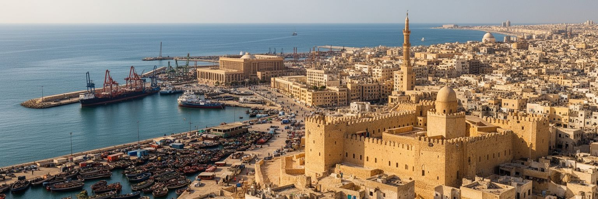
トリポリを読む面白さは、地中海の古い港町と、不安定な石油国家の首都が同じ都市に重なっている点にあります。メディナの路地は交易と信仰の長い時間を伝え、赤い城は支配と記憶の層を抱え、港は輸入と生活物資を受け止めます。政府機関、中央銀行、国営企業、大学、病院、商店は、国の制度がどれほど揺れても住民の日常を支えるために動き続けます。一方で、政治的分裂、武装勢力、通貨と物価、停電、移民の脆弱性、公共サービスの不足は、首都であることの重さを街路に現します。トリポリは観光の華やかさを前面に出しにくい時代を経験してきたが、だからこそ都市を読む視点は広くなります。美しい海岸や古代遺産だけでなく、銀行の列、港の倉庫、発電機の音、ラマダンの食卓、旧市街の修理、通学路、移民の仕事を一緒に見る必要があります。首都の価値は、行政の建物があることだけではなく、人々が不安定さの中で生活の秩序を作り直す力にあります。トリポリは、地中海世界、サハラ、石油、植民地記憶、イスラムの生活、欧州との国境政治が交わる都市です。その複雑さを単純な危機のイメージへ縮めず、歴史、労働、信仰、住宅、気候まで重ねて見ると、リビアの現在をもっと立体的に理解できます。都市の未来もまた、一つの解決策では語れません。治安、制度、港湾、住宅、文化財、移民保護、気候適応を同じ都市政策として扱えるかが問われます。トリポリの強さは、長い歴史を持つ街が、それでも日々の市場と家族の時間を続けていることにあります。